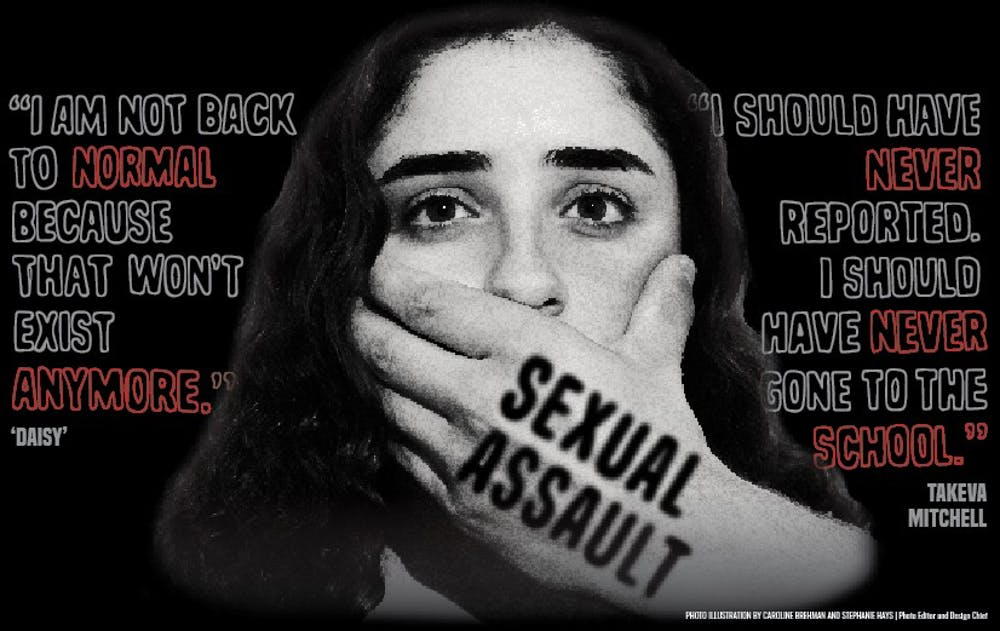

Mens sexual assault rate is 3%
Womens sexaul assault rate is a 17.6%
Children sexaul assalt rate is
and the total ammount of people below the age of 12 ot older is 463,634
10 countries with the highest rape rates:
South Africa (132.40)
Botswana (92.90)
Lesotho (82.70)
Eswatini (77.50)
Bermuda (67.30)
Sweden (63.50)
Suriname (45.20)
Costa Rica (36.70)
Sexual assult is happning every 73 secconds and it could happen to anybody doesnt matter the gender or age.
1 out of 6 woman fall into sexual assault
1 out of 71 men have experinced rape
sexaul assault is a very bad thing that is known around the world because of how serious it is. one it could happen to anyone doesnt matter the race, sex , or age. this is a very bad thing beacsue it doesnt matter that the predator get arrested because noting is gonna fix what he damged one emotinaly and phiscaly you will never be the same. thats why im doing this so i can help spred awareness to stop this and help people get help if they are getting sexualy assaulted. help them speak up because sometimes there agressers treathen them to not talk about it.
sexual violence could be forced or manipulated into someone who who doesnt want to hav sexual activty
Diana ayala has been a very importan person to district 8 in the bronx. she has done alot for distrect 8 in the pass two decades one is helping with housing, gun voilce in which she lost the fater of her futre son. she also helped in senior services.
She worked as a senior center director in East Harlem for seven years, and later joined the team for Speaker Melissa Mark-Viverito as Constituent Services Director, ultimately becoming Deputy Chief of Staff.
sexual assault surged to a 322 %
in 2014 report by the deparntment of justic estamited that a 34.8 % of cases of sexaul assaults are reported.
The New York City Alliance Against Sexual Assault wants to prevent sexual violence and decreese the harm it causes through education, research and advocacy.
heres a link just in case if you have been a victim and want to seek help on you stictuation down here
https://www.levinsimes.com/uber-and-lyft-lawsuit/lyft-sexual-assault/?matchtype=b&network=o&device=c&adposition=&keyword=lyft%20assault&msclkid=d79e076a56bf10d35da267d302ce3a7f&utm_source=bing&utm_medium=cpc&utm_campaign=%5BSER%5D%20Lyft&utm_term=lyft%20assault&utm_content=Lyft 